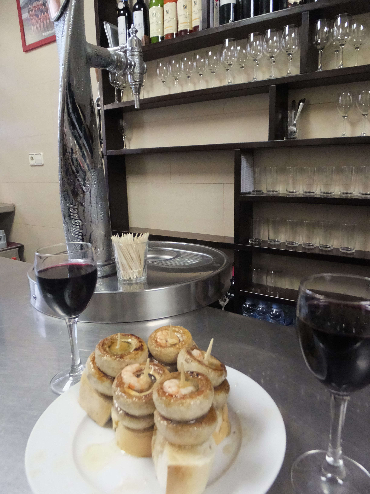
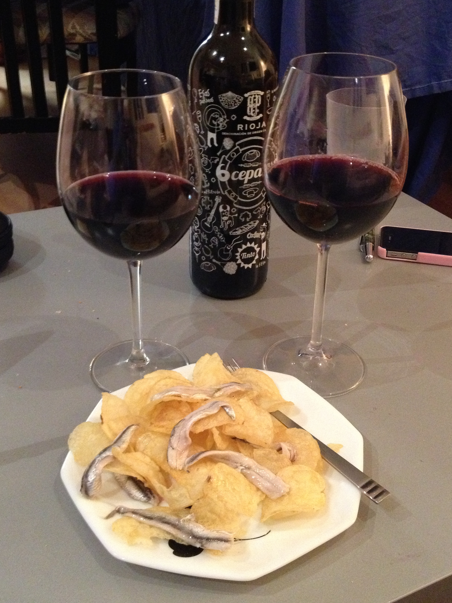
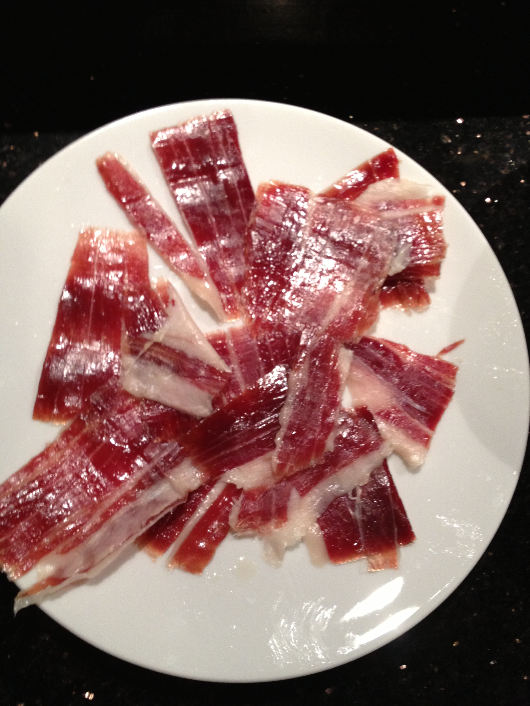

Spanish Cuisine
The Spanish take their culinary arts very seriously. In Spain, food is an important part of life. From tapas to pintxos to la comida, the day revolves around the table (or bar).
Spanish cuisine is one of my personal favorites and one that I love to incorporate in my kitchen. From the jamon of Extremadura to the pulpo a la gallega from Galecia, it runs the gamut of diversity.
Here are a few photos and descriptions of some of my personal favorites. Aproveche!

These are champiñones or 'champis' are mushrooms sautéed in olive oil and white wine vinegar, with a sautéed shrimp on top, placed on a piece of bread.
|

|
This dish is famous in Galicia. Pulpo a la gallega or Galician style octopus. It is quickly boiled, cut, drizzled with olive oil, sprinkled with paprika and served.
|

This is my all time favorite tapa, and would definitely be an addition to my last meal. Boquerones are anchovies that are allowed to cook by being soaked in white wine vinegar. Then they are marinated in olive oil and garlic, sprinkled with parsley and best enjoyed with potato chips and cold beer.
|

Saving the best for last, this is jamón ibérico. This is a cured meat, made from the black-footed Iberian pig. The pig is free-range, living its life in oak forests and eating the acorns which have fallen from the trees. The acorns impart a nutty flavor and oiliness in the meat, that gives the jamón its unique taste. The meat is dry-cured and aged for three years before it is ready to eat. Lots of work goes into this treat.
|